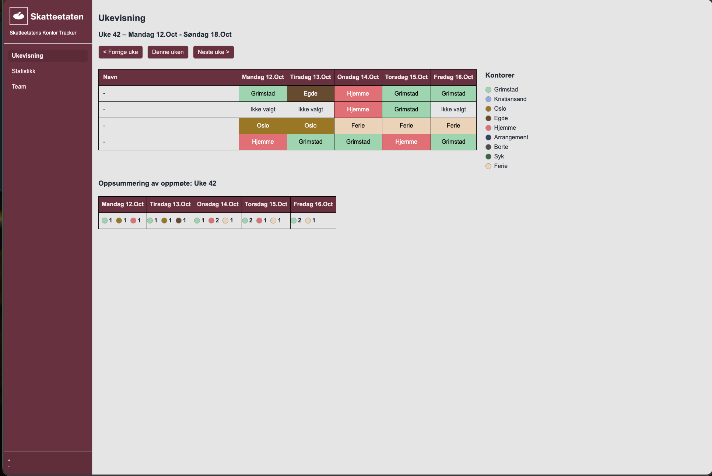
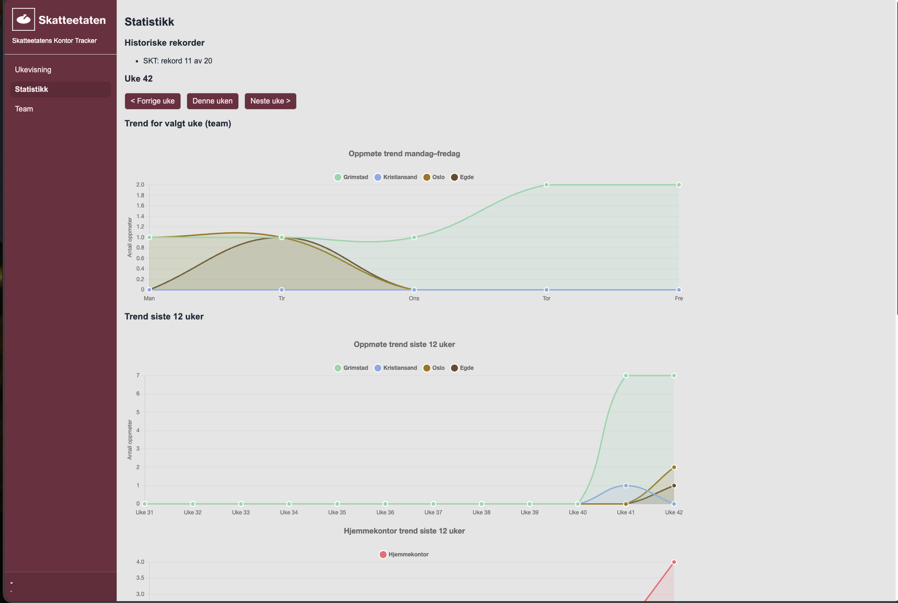

Status 2
Etter status 1 har jeg brukt mye tid på å gjøre løsningen mer ferdig, mer brukervennlig og mer nyttig i praksis. Hovedfokuset har vært på å forbedre brukeropplevelsen, rydde opp i funksjonaliteten og gjøre systemet bedre egnet til faktisk bruk i teamet. Det har vært en tydelig utvikling fra et fungerende grunnlag til en mer helhetlig applikasjon.
Jeg har jobbet videre med designet og gjort visuelle forbedringer som gjør at løsningen blir mer konsistent med Skatteetaten sine fargeregler og standarder. Samtidig har jeg lagt inn flere funksjoner for å gjøre applikasjonen mer praktisk og nyttig i hverdagen. Dette har blant annet inkludert videreutvikling av statistikk-delen, finpuss av ukevisningen og forbedringer rundt autorisering og tilgangsstyring.

En stor del av arbeidet har gått til statistikkfunksjonaliteten. Jeg har fått utviklet og forbedret grafiske oversikter som viser utviklingen over tid, både for oppmøte på kontor og hjemmekontor. Dette gjør det enklere å få en rask og oversiktlig forståelse for hvordan teamets tilstedeværelse endrer seg over tid. Jeg har også jobbet med å gjøre dataene mer relevante for den enkelte bruker og for teamet som helhet.

I tillegg har jeg jobbet med ulike sikkerhets- og tilgangsforbedringer. Autorisering har vært et viktig fokus, og jeg har lagt mye arbeid i å sikre at riktig informasjon vises basert på brukerens tilgang og teamtilhørighet. Dette har bidratt til at applikasjonen er mer robust og bedre egnet til bruk i en reell virksomhetskontekst. Det har også vært en stor fremgang i at løsningen nå er deployet i dev-miljøet, slik at andre i Skatteetaten kan teste og bruke den.
Sammenlignet med status 1 ser jeg en tydelig utvikling i både funksjonalitet, design og forståelse av prosjektet som helhet. Det har gått fra et fungerende grunnlag til en mer komplett løsning, og jeg føler at jeg har fått mye bedre innsikt i hvordan utvikling i praksis fungerer når man jobber mot et reelt system med brukere og krav. Jeg er veldig fornøyd med fremdriften og ser fram til å fortsette med videre forbedringer og utvidelser.